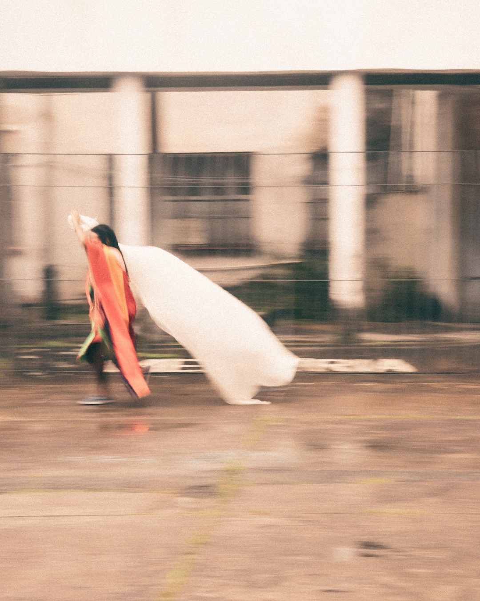
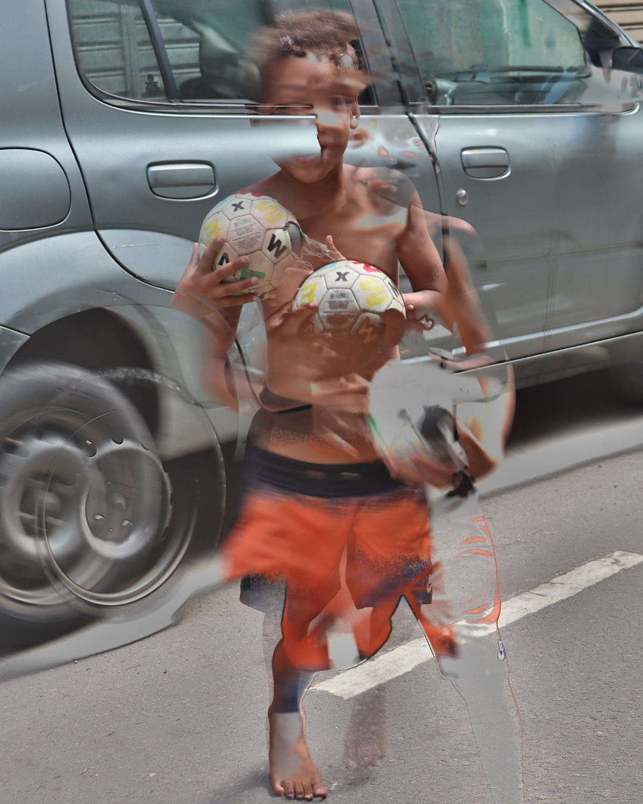
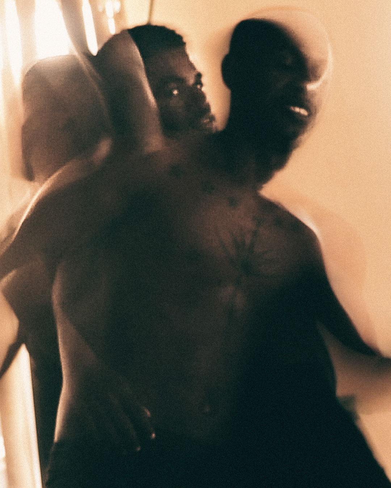
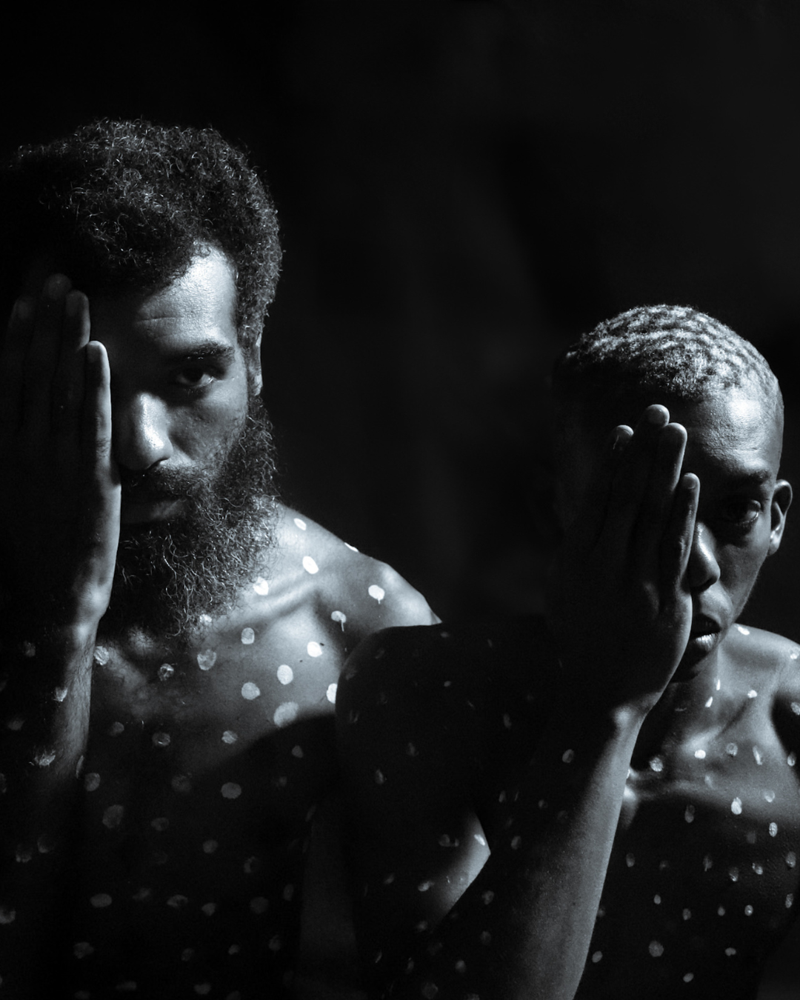
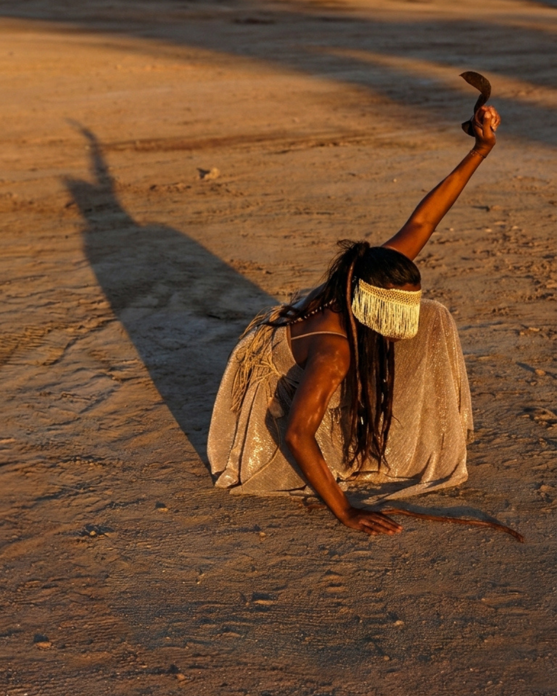
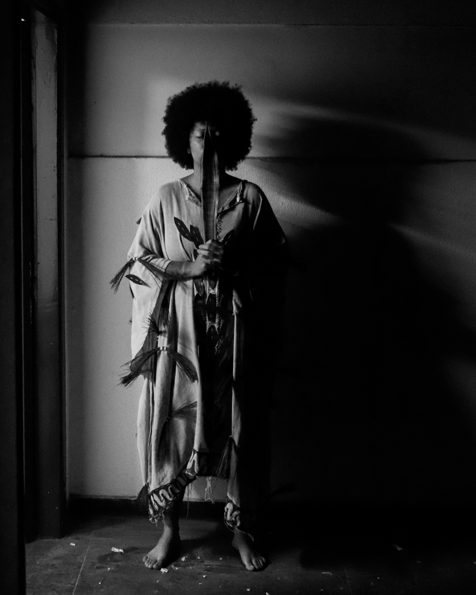
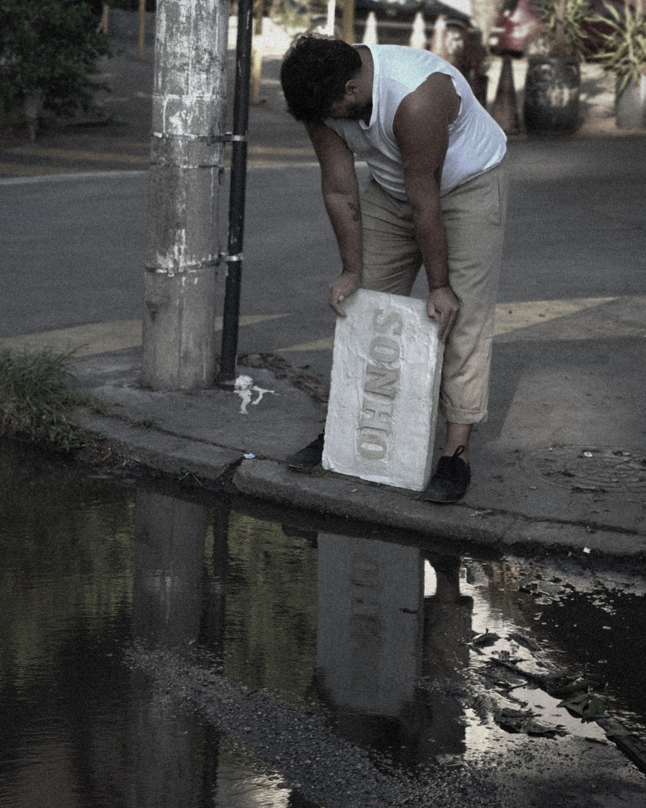
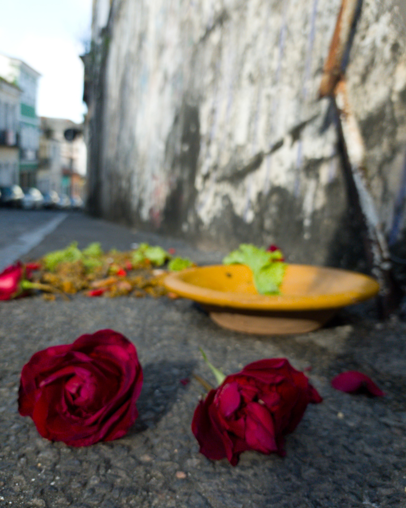

Corpo em oito tempos
Uma mesma pose vista oito vezes. Cada imagem marca um batimento — como se o corpo se riscasse no tempo através do disparo da câmera. Ritmo e repetição como modo de habitar o visível.







